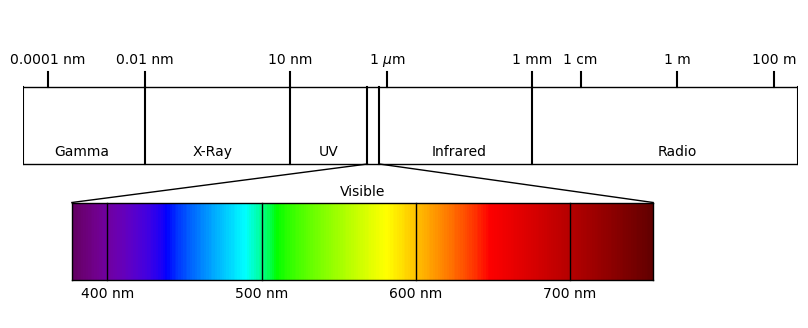

The Electromagnetic Spectrum#
Remote sensing of the ocean is primarily focused with the observation of electromagnetic information going to and coming from the ocean surface. With the exception of gravimetry, all other remotely-sensed observations of the ocean use at least one portion of the electromagnetic spectrum.
In this page, we describe the nature of light and outline the various components on the electromagnetic spectrum. It is intended to provide a brief overview of some charactertics of light sufficient to understand remote sensing topics (rather than providing a full overview of electromagnetism).
The Duality of Light#
In nature, light behaves as both a particle and a wave - a property called the wave-particle duality of light.
As a particle, light can be thought of as a discrete packet of energy that is emitted or aborbed by an atom when an electron in the atom changes energy levels. The energy of the photon (\(E\)) associated emitted or absorbed by the atom is a function of is frequency (\(f\)) as
where \(h = 6.26 \times 10^{-34}\) J\(\cdot\)s is the Planck constant. Here, the term “frequency” is borrowed from light’s behavior as is a property of the individual photon - not the interval between photons being emitted or absorbed by an atom.
When electromagnetic radiation is emitted from multiple sources, light acts as a wave propagating through the electromagnetic field of the universe. Maxwell’s equations - a set of 4 equations describing the behavior and inter-relationship between electric and magnetic fields - reveal that perturbations in the electic field coincide with orthogonal perturbations in the magnetic field.
The wavelength of light (\(\lambda\)) is related to its frequency (\(f\)) by the speed of light (\(c = 2.99 \times 10^8\) m/s) in the universe as
Note that \(\lambda\) has units of meters and \(f\) has units of 1/s, also known as Hertz (Hz). In this remote sensing book, we will primarily think about light in terms of its wavelength, meaning most equations will be written in terms of \(\lambda\).
The Electromagnetic Spectrum#
The electromagnetic spectrum defines the range of wavelengths of light in our universe. It can be visualized in the following figure:
Here, the wavelengths of light are organized with wavelength increasing from left to right. Since the energy associated with a single photon is directly proportional to frequency - and therefore inversely proportional to wavelength - the energy associated with this light is decreasing from left to right.
The electromagnetic spectrum is divided into broad portions, summarized as follows:
Name |
Wavelength Range |
Oveview |
|---|---|---|
Gamma |
\(< 10^{-11}\) m |
High energy radiation produced from radioactive decay or fission, such as in the explosion of atomic bombs. Generated by interaction of cosmic rays with matter in the universe. |
X-ray |
\(10^{-11}\) m - \(10^{-8}\) m |
High energy radiation produced from radioactive decay or fission. |
Ultraviolet (UV) |
\(10^{-8}\) m - \(4\times 10^{-7}\) m |
High energy radiation produced by the sun. A fraction of UV light is scattered or absorbed in the atmosphere, largely by ozone. |
Visible |
\(4\times 10^{-7}\) m - \(7.5\times 10^{-7}\) m |
Peak radiation produced by the sun. Termed “visible” because human eyes are adapted to sense these wavelengths of radiation. |
Infrared |
\(7.5\times 10^{-7}\) m - \(0.001\) m |
Low energy radiation emitted by all warm blackbody objects in the universe. |
Radio |
\(>0.001\) m |
Low energy radiation emitted by all blackbody objects in the universe. Produced naturally in the universe as well as artifically on Earth for communication and other purposes. |
As we will see, there are many remote sensing applications that leverage electromagnetic radiation at a range of different wavelengths, primarily in the visible, infrared, and radio regions of the spectrum.